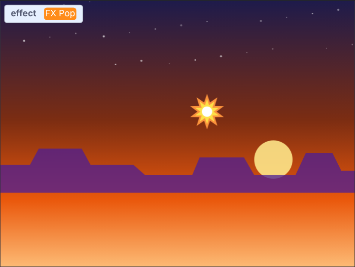
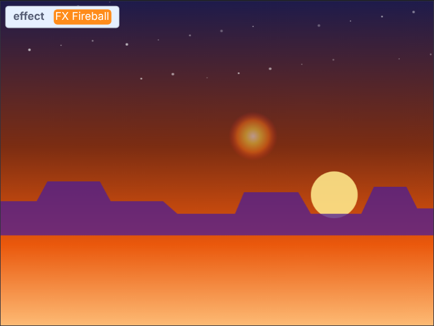
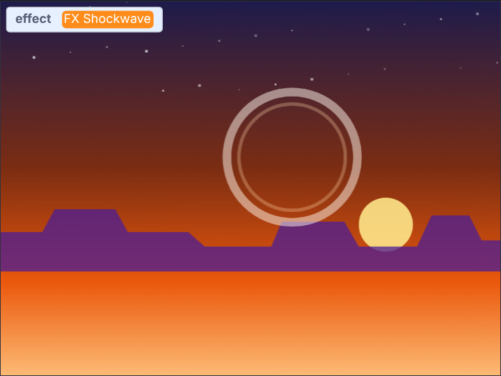
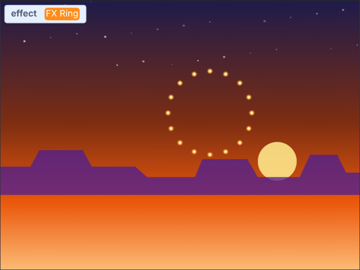
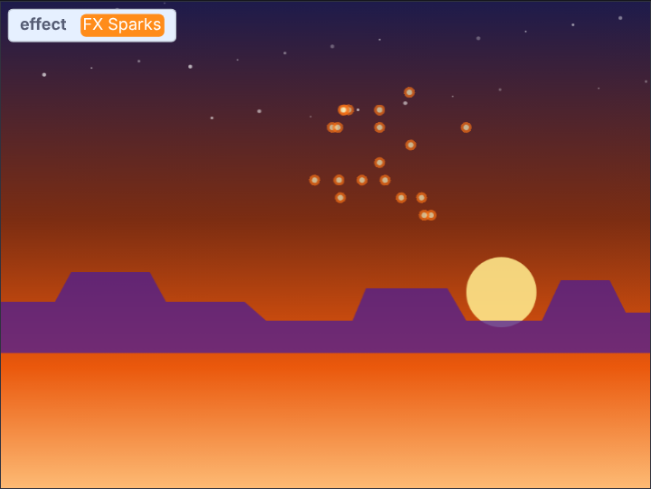
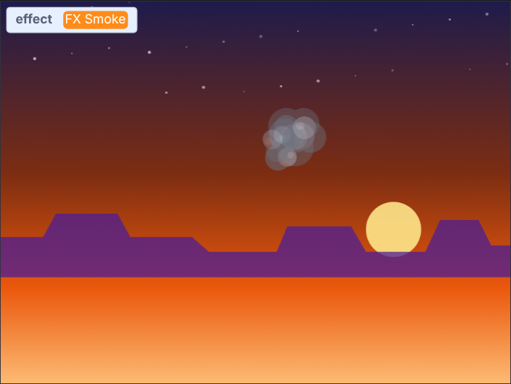
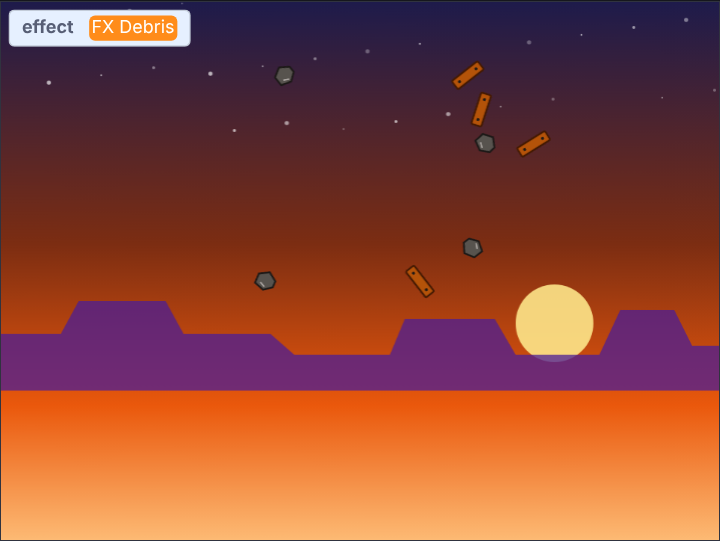
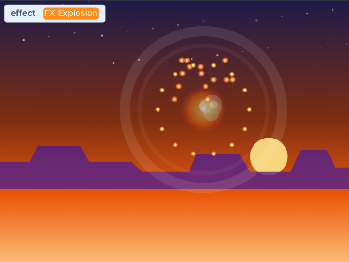
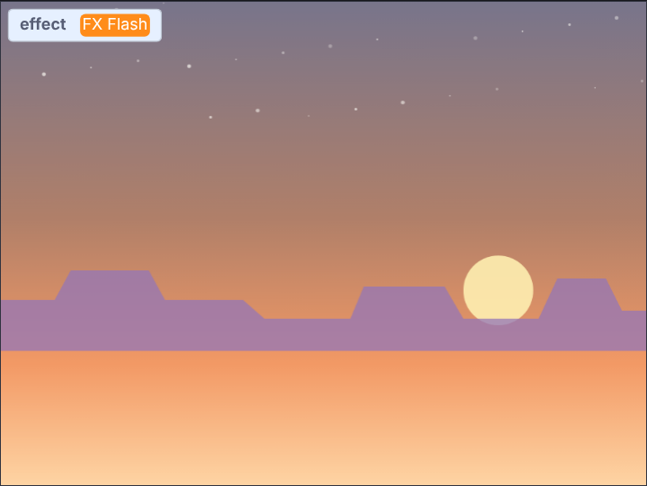

Effect Sprites
Ready-made explosion effects for your own Scratch games, each with its own sound. Every sprite hides when the green flag is clicked and plays its effect in a clone, wherever you ask, then cleans up after itself.
How to use them
- Download a sprite below (a
.sprite3file). - In the Scratch editor, point at the cat button at the bottom right of the sprite list and choose Upload Sprite. Pick the file.
- Scratch makes two variables for all sprites,
fx xandfx y: that is where the effect plays. - In any sprite (a ship that is hit, a balloon that pops), set them and make a clone of the effect:
set [fx x v] to (x position) set [fx y v] to (y position) create clone of [FX Explosion v]
That's all: you don't need to change anything inside the effect sprite. Use as many as you like, and as often as you like: every clone plays on its own and deletes itself.
Try them all first: effects-demo.sb3 has every effect. Press 1 to 9 to pick one, and click anywhere on the stage.
The sprites






Debris
FX Debris
Rocks and planks fly, spin, and bounce on the bottom of the stage.
Download fx-debris.sprite3
Explosion
FX Explosion
The big one: fireball, shockwave, sparks, embers and smoke.
Download fx-explosion.sprite3
Screen flash
FX Flash
The whole screen flashes warm white. It ignores fx x and fx y.
Download fx-flash.sprite3How they work
Open a sprite's code to see. The clone you make goes to fx x, fx y and starts its sound. A simple effect (Pop, Fireball, Shockwave) then just changes its costume, size or ghost effect. A bigger one makes pieces: more clones of itself, each with a role (spark, ember, smoke, ...), and the first clone waits until its sound is over before it deletes itself, because a deleted clone's sound stops too. Debris bounces on the bottom of the stage.